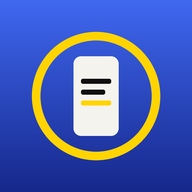

Motor Stories · Escrita
Para ter este ícone na tela inicial: toque em ⋮ (canto de cima) → Instalar app ou Adicionar à tela inicial. Depois abra pelo ícone.
Abrir o Motor Stories azul
Para ter este ícone na tela inicial: toque em ⋮ (canto de cima) → Instalar app ou Adicionar à tela inicial. Depois abra pelo ícone.
Abrir o Motor Stories azul